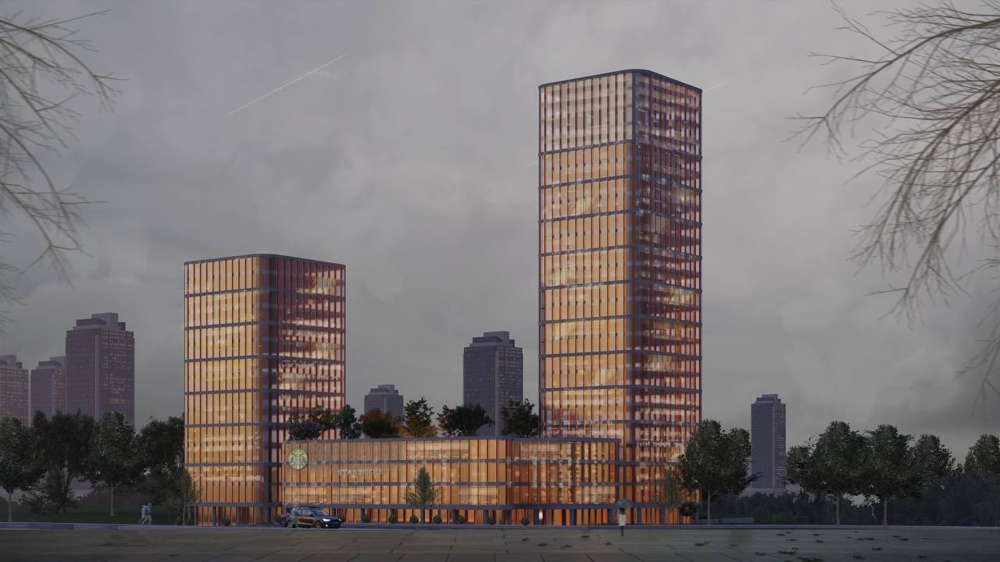

Salam, mən
Hüseyn Səmədzadə
Portfolioma xoş gəlmisiniz.


Portfolio
 (3)_page-0001.jpg)
Konservasiya layihəsi
Bu layihəni universitetdə oxuduğum zaman, 3-cü kursun 1-ci yarısında layihələndirmişəm. Layihə, Nərimanov rayonunda yerləşən mədəniyyət mərkəzidir. Layihənin ölçülərinin alınması, trianqulasiya sistemi ilə divarların düzlüyünün ölçülməsi və əraziyə ilkin baxışlar tətbiq edilmişdir.Layihə haqqında ətraflı məlumat:
Məkan: Nərimanov rayonu, Bakı, Azərbaycan
Layihənin məqsədi: Bu mədəniyyət mərkəzi, ərazidə mədəni və sosial fəaliyyətləri təşviq etmək, yerli əhali üçün müxtəlif tədbir və fəaliyyətlərə ev sahibliyi etmək məqsədilə nəzərdə tutulmuşdur.
Əsas mərhələlər:
Ölçülərin alınması: Layihənin başlanğıc mərhələsində ərazinin və mərkəzin ölçülərinin dəqiq müəyyən edilməsi üçün müxtəlif ölçmə cihazlarından istifadə edilmişdir. Trianqulasiya sistemi: Divarların düzlüyünün və mərkəzin struktural bütövlüyünün təmin edilməsi üçün trianqulasiya sistemi tətbiq edilmişdir. Bu sistem, nöqtələrin koordinatlarının dəqiq müəyyən edilməsi üçün istifadə olunur və divarların düzülüşü üçün vacibdir. Əraziyə ilkin baxışlar: Layihənin davamı və tərtibatı üçün əraziyə bir neçə ilkin baxış həyata keçirilmişdir. Bu baxışlar zamanı ərazinin topoqrafiyası, mövcud infrastruktur və gələcək inkişaf potensialı qiymətləndirilmişdir.
Layihə prosesində istifadə edilən metodlar:
Geodeziya ölçmələri: Ərazinin coğrafi və fiziki xüsusiyyətlərinin müəyyən edilməsi üçün istifadə edilmişdir.
Dizayn və planlaşdırma proqramları: Layihənin kompüter dəstəkli dizayn (CAD) proqramları vasitəsilə vizualizasiyası və planlaşdırılması. Bu layihə həm də mənim akademik biliklərimin praktiki tətbiqi və peşəkar bacarıqlarımın inkişafı üçün mühüm bir təcrübə olmuşdur.
 (3)_page-0002.jpg)
Şəhid Bulağı layihəsi
Bu layihəni universitetdə oxuduğum zaman, 4-cü kursun 2-ci yarısında layihələndirmişəm. Ərazi, Laçın rayonunda yerləşən Şəhidlərin xatirəsinə həsr olunmuş bulaqdır. Bu layihə mənim üçün qürur duyduğum bir layihədir. Layihələndirilərkən, şəhidlərimizin xatirəsini əbədi saxlamaq və onların qəhrəmanlığını yad etmək məqsədi ilə xüsusi elementlərdən istifadə edilmişdir.Layihə haqqında ətraflı məlumat:
Məkan: Laçın rayonu, Azərbaycan
Layihənin məqsədi: Şəhidlərimizin xatirəsini əbədiləşdirmək və gələcək nəsillərə onların qəhrəmanlığını anlatmaq üçün bir xatirə bulağı yaratmaq.
Əsas xüsusiyyətlər:
Tavan dizaynı: Layihənin tavanında şəhidlərimizin adları əks etdirilmişdir. Bu, ziyarətçilərə şəhidlərimizin adlarını görməklə onları xatırlama və hörmət göstərmə imkanı verir.
Ön fasad dizaynı: Ön fasadda şüşə elementində Azərbaycan Respublikasının Silahlı Qüvvələrinin Haropla vurduğu koordinatlar əks etdirilmişdir. Bu, ziyarətçilərə qəhrəmanlıq anlarını və tarixi hadisələri xatırladan bir elementdir.
Bulağın dizaynı: Bulaq, şəhidlərin xatirəsini simvolizə edən və eyni zamanda ziyarətçilərə su təklif edən funksional bir məkan kimi dizayn edilmişdir.
Layihə prosesində istifadə edilən metodlar:
Tarixi məlumatların toplanması: Şəhidlərin adlarının və hadisələrin koordinatlarının dəqiq və düzgün olması üçün tarixi məlumatlar toplanmış və araşdırmalar aparılmışdır.
Dizayn prinsipləri: Xatirə məkanlarının dizaynı üçün müasir memarlıq və dizayn prinsipləri tətbiq edilmişdir.
Materialların seçimi: Şüşə və digər dayanıqlı materiallardan istifadə edilmişdir ki, bu da bulağın uzun ömürlü olmasını təmin edir və estetik baxımdan cəlbedici görünüş yaradır.
Layihənin əhəmiyyəti: Bu bulaq, şəhidlərimizin qəhrəmanlığını və fədakarlığını yaddaşlarda yaşatmaqla yanaşı, ziyarətçilərə onların xatirəsini əziz tutma imkanı verir. Layihə həm də mənim akademik və peşəkar inkişafımda mühüm bir mərhələ olmuşdur

Biznes binası layihəsi
Bu layihəni universitetdə oxuduğum zaman, 4-cü kursun 2-ci yarısında layihələndirmişəm. Ərazi, Heydər Əliyev prospektində yerləşən biznes mərkəzidir. Layihənin məqsədi, ərazinin kompozisiyasına uyğun şəkildə qurulması, həm erqonomik həllərin tətbiqi, həm də yanğın təhlükəsinin minimuma endirilməsi və təxliyyə planlarının hazırlanmasıdır.Layihə haqqında ətraflı məlumat:
Məkan: Heydər Əliyev prospekti, Bakı, Azərbaycan
Layihənin məqsədi: Bu biznes mərkəzi, müasir və təhlükəsiz iş mühiti təmin edərək, işçilərin rahatlığını və təhlükəsizliyini artırmaq üçün nəzərdə tutulmuşdur.
Əsas mərhələlər:
Ərazi kompozisiyası: Biznes mərkəzinin ərazisinin ümumi planı, ətraf mühitlə uyğunluq nəzərə alınaraq tərtib edilmişdir. Məkanın funksional zonalara bölünməsi və bu zonaların qarşılıqlı əlaqələri diqqətlə planlaşdırılmışdır.
Erqonomik həllər: İş mühitinin erqonomik dizaynı, işçilərin rahatlığını və məhsuldarlığını artırmaq üçün həyata keçirilmişdir. Bu məqsədlə, iş yerlərinin planlaşdırılması, işıqlandırma, havalandırma və digər erqonomik faktorlar nəzərə alınmışdır.
Yanğın təhlükəsizliyi: Yanğın təhlükəsinin minimuma endirilməsi üçün mərkəzin müxtəlif yanğınsöndürmə sistemləri ilə təchiz edilməsi və təhlükəsizlik protokollarının hazırlanması həyata keçirilmişdir. Yanğın detektorları, yanğınsöndürmə cihazları və təxliyyə yollarının düzgün planlaşdırılması təmin edilmişdir.
Təxliyyə planı: Fövqəladə hallarda insanların təhlükəsiz və sürətli şəkildə təxliyyəsini təmin etmək üçün təxliyyə planları hazırlanmışdır. Bu planlar, ərazinin hər nöqtəsindən təhlükəsiz çıxış yollarının və təxliyyə istiqamətlərinin müəyyən edilməsini əhatə edir. Layihə prosesində istifadə edilən metodlar:
Təhlükəsizlik standartları: Beynəlxalq və yerli təhlükəsizlik standartları nəzərə alınaraq layihələndirmə işləri aparılmışdır.
Erqonomik dizayn prinsipləri: İş yerlərinin rahat və funksional olması üçün müasir erqonomik dizayn prinsipləri tətbiq edilmişdir.
Təxliyyə planlaşdırma proqramları: Təxliyyə planlarının dəqiq və effektiv olması üçün xüsusi proqramlardan istifadə edilmişdir.
Bu layihə mənim akademik biliklərimin praktiki tətbiqi və peşəkar bacarıqlarımın inkişafı üçün mühüm bir təcrübə olmuşdur. Layihə çərçivəsində həm texniki, həm də təhlükəsizlik aspektlərinin nəzərə alınması, gələcəkdə bu sahədə çalışacaq mütəxəssis kimi mənə dəyərli biliklər qazandırmışdır.

Park layihəsi
Bu layihəni Şərqi Zəngəzur İqtisadi Rayonunda, 1 saylı Bərpa, Tikinti və İdarəetmə Xidmətində təcrübədə olduğum müddətdə layihələndirmişəm. Layihə, Cəbrayıl rayonu Horovlu kənd mərkəzi parkıdır. Parkın əsas xüsusiyyətlərindən biri, smart və hibrid yanaşmaların tətbiq edilməsidir. Hazırda gördüyünüz konseptual layihədir və artıq işçi layihə mərhələsi bitmiş, tikintiyə uğurla yola salınmışdır.Layihə haqqında ətraflı məlumat:
Məkan: Horovlu kəndi, Cəbrayıl rayonu, Azərbaycan
Layihənin məqsədi: Horovlu kənd sakinləri üçün müasir və funksional bir istirahət məkanı yaratmaq, kəndin sosial və ekoloji həyatına müsbət təsir göstərmək.
Əsas xüsusiyyətlər:
Smart texnologiyalar: Parkda istifadəçilərin rahatlığını təmin etmək və ekoloji təsirləri minimuma endirmək üçün smart texnologiyalar tətbiq edilmişdir. Bu texnologiyalar arasında ağıllı işıqlandırma sistemləri, suvarma sistemləri və enerji qənaət edən qurğular yer alır. Hibrid yanaşma: Parkın dizaynında həm təbii, həm də müasir elementlər birləşdirilmişdir. Yaşıllıq sahələri, gəzinti yolları və istirahət zonaları ilə yanaşı, müasir tikililər və infrastrukturlar da nəzərdə tutulmuşdur.
Ekoloji davamlılıq: Parkın yaradılmasında ekoloji davamlılıq prinsiplərinə riayət edilmişdir. Yerli bitki növləri və su mənbələri qorunmuş, təkrar emal edilən materiallardan istifadə edilmişdir.
İstifadəçi yönümlü dizayn: Park, müxtəlif yaş qruplarının ehtiyaclarına cavab verəcək şəkildə dizayn edilmişdir. Uşaq oyun sahələri, idman meydançaları və sakit istirahət zonaları parkın müxtəlif hissələrində yerləşdirilmişdir.
Layihə prosesində istifadə edilən metodlar:
Ekoloji təhlil: Ərazinin ekoloji xüsusiyyətləri nəzərə alınaraq, parkın dizaynı üçün uyğun bitki və materiallar seçilmişdir.
Müasir memarlıq və texnologiya: Smart və hibrid texnologiyaların effektiv tətbiqi üçün müasir memarlıq prinsipləri və qabaqcıl texnologiyalardan istifadə edilmişdir.
İstifadəçi tələblərinin öyrənilməsi: Kənd sakinlərinin ehtiyac və istəkləri nəzərə alınaraq, parkın dizaynı və funksional zonalar müəyyən edilmişdir.
Layihənin əhəmiyyəti: Horovlu kənd mərkəzi parkı, kəndin sosial və ekoloji həyatına müsbət təsir edəcək, sakinlərin asudə vaxtlarını səmərəli və rahat keçirmələrinə şərait yaradacaq. Bu layihə mənim üçün həm təcrübi biliklərimin tətbiqi, həm də gələcək layihələrim üçün dəyərli bir təcrübə olmuşdur.
 (3)_page-0009.jpg)
Məktəb layihəsi

Yaşayış Kompleksi layihəsi